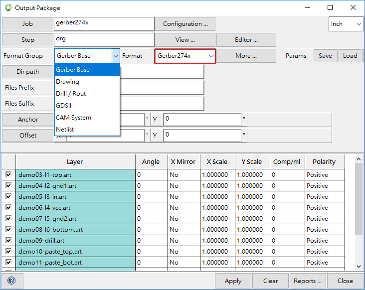
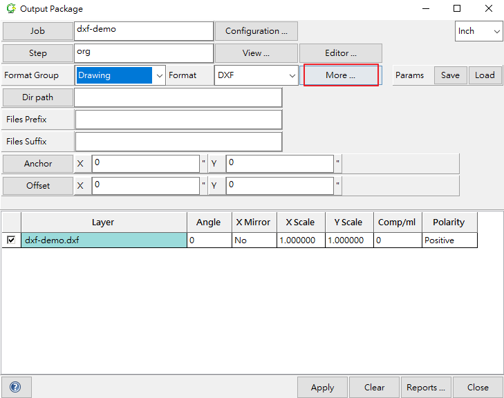

CAMPro Data Input & Output Guide
1. Input & Output ODB++
2. Input Gerber
- 2-1-1 Create Entity
- 2-1-2 Input Gerber274X
- 2-1-3 Drag to Input Gerber274X
- 2-1-4 Analyze and process Gerber274X
- 2-3-1 Create Entity
- 2-3-2 Input Gerber274D
- 2-3-3 Drag to input Gerber274D 2-3-4 Analyze and process Gerber274D
2-4 How to deal with gerber274D if it appears irregular
3. Input Excellon2
- 3-1-1 Create Entity
- 3-1-2 Input Excellon2
- 3-1-3 Drag to input Excellon2
- 3-1-4 Analyze and process Excellon2
4. Input DXF
5. Output Gerber274X, Excellon2 or DXF
- 5-1-1 How to open Output Package
- 5-1-2 Select needed Job to output
- 5-1-3 Select needed Step to output
- 5-1-4 Configure Output format
- 5-1-5 Select needed Layer to output
- 5-1-6 Configure Parameter
- 5-1-7 Save Parameter Setting
- 5-1-8 Select Output Path
- 5-1-9 Name Gerber274X File
- 5-1-10 Set coordinate
- 5-1-11 Output Gerber274X Completion
- 5-2-1 How to open Output Package
- 5-2-2 Select needed Job to output
- 5-2-3 Select needed Step to output
- 5-2-4 Configure Output format
- 5-2-5 Select needed Layer to output
- 5-2-6 Configure Parameter
- 5-2-7 Save Parameter Setting
- 5-2-8 Select Output Path
- 5-2-9 Name Excellon2 File
- 5-2-10 Set coordinate
- 5-2-11 Output Excellon2 Completion
- 5-3-1 How to open Output Package
- 5-3-2 Select needed Job to output
- 5-3-3 Select needed Step to output
- 5-3-4 Configure Output format
- 5-3-5 Select needed Layer to output
- 5-3-6 Configure Parameter
- 5-3-7 Save Parameter Setting
- 5-3-8 Select Output Path
- 5-3-9 Name DXF File
- 5-3-10 Set coordinate
- 5-3-11 Output Excellon2 Completion
1-1 Input ODB++
- In this chapter, a practical example will illustrate how to input ODB++.
There are two ways to input ODB++
1-1-1 Input ODB++
- Open "File" and Click "Import ODB++" in camPro home screen.

- Click "Input Path"

- Select needed ODB++ ready to be input. (The demonstration takes ODB++_demo.tgz for example)
- Click "Open".

- Click "Import"
- After Job input successfully, it will appear on camPro home screen.
1-1-2 Drag to input
- Drag needed ODB++ to camPro home screen. (The demonstration takes ODB++_demo.tgz for example)

- Click "Import"
- After Job input successfully, it will appear on camPro home screen.
1-2 Output ODB++
- In this chapter, a practical example will illustrate how to output ODB++.
- Click needed Job.
- Open "File", Select "Export ODB++".
1-2-1 Set output format
- Job: Choose the Job is ready to be output.
- Path: Choose Output Stored Path. The demonstration takes C:/CAMPro as an example.
- ODB++version: Select output ODB++ version. (camPro provide ODB++ Version 6 and Version 7, The demonstration takes Version 6 as an example)

There are two modes for output
1-2-2 Full Output
- Job: Choose the Job is ready to be output.
- Path: Choose Output Stored Path. The demonstration takes C:/CAMPro as an example.
- ODB++version: Select output ODB++ version. (camPro provide ODB++ Version 6 and Version 7, The demonstration takes Version 6 as an example)
- Mode：Exported Filename Extension defaulted setting is ".tgz". Choosing "Full" allows you to export all files in this Job.
- After completing the settings, please Click "Apply".
- As you see Job export complete notice in the green background, you can find exported ODB++ in the target path.

1-2-3 Partial Output
- Selecting "Partial" in Mode allows you to extract partial items from this Job.

- Open "Step", Select needed Step and Click "OK", The demonstration takes exporting "org" as an example.

- Open "Layer", Select needed Step and Click "OK", The demonstration takes exporting "stupy" as an example.

After completing the settings, please Click "Apply".
As you see Job export complete notice in the green background, you can find chosen exported ODB++ in the target path.

2-1 Input Gerber274X
- In this chapter, a practical example will illustrate how to input Gerber274X.
2-1-1 Create Entity
- Open "File" and Click "Create".

- Entity name: Name your Entity.
- Database：Choose where to store Entity.
- After completing the settings, please Click "OK"

- Click "OK" to confirm information.

- After completion, Created Entity will appear on the home screen.

- First Select needed Gerber274X Entity and Click "Input"

There are two ways to input Gerber274X
2-1-2 Input Gerber274X
- Select "Path", choose needed Gerber274X and Click "Open".

2-1-3 Drag to Input Gerber274X
- Drag Gerber274X file folder into camPro window.

2-1-4 Analyze and process Gerber274X
- Once Gerber274X is input, you will enter Input Package screen.
- Click "Identify", camPro will start to Analyze file format.
- After analyzing the process, file format will appear selectable on the Input Package window.
- Please key in Step name in the column. (The demonstration takes org as an example)
- Please select needed Gerber274X items and Click "Translate".

- Click "OK" to confirm the new step entity.

- After Translating process, State column will appear OK which means that your Gerber274X files have been input properly.
- Please Click "Editor" to check whether your Gerber274X graph corresponds to your expectation.

- Graphic Editor Window:

2-2 How to deal with Gerber274X if it appears irregular
- If you notice your Geber graphic doesn't meet your expectation, this manual provides some countermeasures for you.
2-2-1 How to modify Gerber274X parameters
- If you find Geber proportion incorrect, please tick Gerber274x needs to be modified, Click right button and select "Parameter" to modify the parameter.
- Please modify parameter based on your requirement.
- Modify Number format.
- File filter feature allows you to quickly read other similar files.
- Please Select "yes" in other Files.
- Select "Same" in Format.
- Select "Same" in Directory.
- At last, Click "OK".

2-2-2 Translate Gerber274X anew
- After modifying Parameter, please Click "Translate" again.
- After clicking Translate, you can Click "Editor" to review Gerber graph.

2-3 Input Gerber274D
In this section, a practical example will illustrate how to input Gerber274D.
2-3-1 Create Entity
- Open "File" and Click "Create".

- Entity name：Please key in Entity name. The demonstration takes name 274D as an example.
- Database：Select Path where store Entity. The demonstration takes camPro folder as an example.

- After completing the settings, please Click "OK", Click OK too on information notice.

- Created Entity will appear in camPro home screen.

There are two ways to input Gerber274D：
2-3-2 Input Gerber274D
- Select needed Gerber274D Entity and Click "Input".
- Select "Path", choose needed Gerber274D and Click "Open".


2-3-3 Drag to input Gerber274D
- Drag Gerber274D file folder into camPro window.

2-3-4 Analyze and process Gerber274D
- Click "Identify", camPro will start to Analyze file format.
- After analyzing the process, file format will appear selectable on the Input Package window.
- Please key in Step name in the column. (The demonstration takes org as an example)
- Please select needed Gerber274D items and Click "Translate".

- Click "OK" to confirm the new step entity.

After Translating process, State column will appear OK which means that your Gerber274D files have been input properly.
Please Click "Editor" to check whether your Gerber274D graph corresponds to your expectation.
- Graphic Editor window demonstration：

2-4 How to deal with gerber274D if it appears irregular
- After Gerber274D being translated, State column will appear input result. If State column appears Check File, it means that your Gerber274D wasn't inputted properly. This chapter will teach you how to correct it step by step by using an actual example.
2-4-1 Find Ascii file that corresponds to Gerber274D
- You can right Click Ascii format and select "View Ascii" to distinguish whether it matches to Gerber274D.
- The demonstration takes Demo.LST as an example.


2-4-2 Open Wheel Template Editor Form
- Right Click target Ascii file and choose "Open Wheel Template".
- The demonstration takes Demo.LST as an example.

2-4-3 Modify Wheel Template Editor Form
- Please refer to below sub-chapter to understand what needs to be configured in Wheel Template Editor Form.
2-4-3-1 Modify Parameter
- Open "Params" and Click "Global".

- Wheel type：We choose Gerber in that demonstration is Gerber274D,
- Unit：Choose unit based on your actual circumstances.
- Click "OK"
2-4-3-2 Set Shape
- Select APER #01 column.

- Open "Edit" and Click Add Record. The popup screen will appear.
- We choose "Round" and Click "OK" in that it shows ROUND.

2-4-3-3 Set Dcode
- Compare and find out the number in the Basic column that corresponded to the DCODE in the red rectangle.

- Let the Dcode number in the Basic column that is the same as DCODE be revised from Float to "Dcode".

2-4-3-4 Set X,Y Size
- Compare and find out the number in the Basic column that corresponded to Size_X and Size_Y and Click "Diameter" to input the figure. (We only configure one time in that the example shape is round)

2-4-3-5 Translate Wheel
- After completing the settings for Parameter, Shape, and Size, please open "Actions" and Click "Translate Wheel".
- Items successfully translated will appear in green background and camPro will automatically input items with the similar condition.
Example following
- Remaining items hasn't translated yet because their shape is not the same as the previous example, you have to repeat actions including Set Shape, Set Dcode, Set Size and Translate Wheel.
Set Shape
- Select item that hasn't translated wheel yet. The demonstration takes number APER 18 as an example.
- Open "Edit" and select "Add Record".

- We choose "Square" because the item shows Square. Then, Click "OK".

Set Dcode and Size
- Let the Dcode number in the Basic column that is the same as DCODE be revised from Float to "Dcode".
- Compare and find out the number in the Basic column that corresponded to Size_X and Size_Y and Click "Diameter" to input the figure. (We only configure one time in that the example shape is Square)
Translate Wheel
- After completing the settings for Parameter, Shape and Size, please open "Actions" and Click "Translate Wheel".

- Items successfully translated will appear in green background and camPro will automatically input items with the similar condition.

2-4-4 How to deal with an unknown graph
- Click target item. (The demonstration takes item TARGET in red rectangle for example)
- Open "Edit" and Click "Add Record"

- Select "Round" on Popup screen and Click "OK".

- Compare and find out the number in the Basic column that corresponded to the DCODE in the red rectangle.
- Let the Dcode number in the Basic column that is the same as DCODE is revised from Float to "Dcode".
- Compare and find out the number in the Basic column that corresponds to Size_X and Size_Y and Click "Diameter" to input the figure. (We only configure one time in that the example shape is round).
- After completing the settings for Parameter, Shape and Size, please open "Actions" and Click "Translate Wheel".
- Items successfully translated will appear in green background and camPro will automatically input items with the similar condition.

2-4-5 How to deal with if without a graph
Select target item (The demonstration takes the item showing --- within the red frame)
Open "Edit", Select "Add Record".

Select "Round" on Popup screen and Click "OK".

- Compare and find out the number in the Basic column that corresponded to the DCODE in the red rectangle.
- Let the Dcode number in the Basic column that is the same as DCODE is revised from Float to "Dcode".
- Compare and find out the number in the Basic column that corresponded to Size_X and Size_Y and Click "Diameter" to input the figure. (We only configure one time in that the example shape is round)
- After completing the settings. Parameter, Shape and Size, please open "Actions" and Click "Translate Wheel".

How to deal with when X axis or Y axis doesn't show up
Select target item.
Open "Edit" and select "Add Record".
Select "Round" on Popup screen and Click "OK".

- Compare and find out the number in the Basic column that corresponds to the DCODE in the red rectangle.
- Let the Dcode number in the Basic column that is the same as DCODE be revised from Float to "Dcode".
- Compare and find out the number in the Basic column that corresponded to Size_X and Size_Y and Click "Diameter" to input the figure. (We only configure one time in that the example shape is round)

- After completing the settings Parameter, Shape and Size, please open "Actions" and Click "Translate Wheel".
- Items successfully translated will appear in the green background and camPro will automatically input items with the similar condition.

2-4-7 Save Modified Wheel Template
- After confirming all items has been well set shape, Dcode, Size. It's ready to save the Wheel Template.
- Open "File" and Select "Save".
- Name the Wheel Template. Demonstration names "Demo" as an example.

2-4-8 Read Modified Wheel Template
▼ Return to Input package screen.
- Select any Gerber274D item and right Click it, select "Parameters".
- Click "Wheel", select previously modified Wheel that is Demo.LST in this example.
File filter provides the feature that quickly inputs other similar files.
- Please select "Yes" in other File.
- Select "Same" in Format.
- Select "Same" in Directory.
- At last, Click "OK".

2-4-9 Translate Gerber274D anew
- Tick needed Gerber274D items.
- Click "Identify" and Click "Translate" to translate Gerber274D with modified Wheel Template.

- There will be a Warning window that asks you if you would like to overwrite Layers, please Click "OK".
- After Gerber274D being translated, items background will become green, State column will appear OK.
- At last, Click "Editor" to confirm your Gerber274D graph.

3-1 Input Excellon2
- In this chapter, we will teach you how to input Excellon2 with a following actual example.
3-1-1 Create Entity
- Open "File", Click "Create".
- Entity name：Key in Entity name (Usually part#)
- Database：Select which path to store Entity.
- After completing the settings, please Click "OK".

- Click "OK" too in information notice.

- Created Entity will appear in camPro home screen.

- Click Entity and Click "Input".
There are two ways to input Excellon2：
3-1-2 Input Excellon2
- Click "Path", choose needed Excellon2 file and Click "Open".


3-1-3 Drag to input Excellon2
- Drag needed Excellon2 file to camPro home screen. (The demonstration takes Excellon2 file folder for example)

3-1-4 Analyze and process Excellon2
- Once Excellon2 is input, you will enter Input Package screen.
- Click "Identify", camPro will start to Analyze file format.

- After analyzing the process, file format will appear selectable on the Input Package window.
- Please key in wanted Step name in the step column. The demonstration takes org as an example.
- Please select needed Excellon2 items and Click "Translate".

- Click "OK" to confirm the new step entity.

- After Translating process, State column will appear OK which means that your Excellon2 files have been input properly.
- Please Click "Editor" to check whether your Excellon2 graph corresponds to your expectation.

3-2 How to deal with Excellon2 if it appears irregular
- After Excellon2 being translated, State column will appear input result. If State column appears Check File, it means that your Excellon2 isn't inputted properly. This chapter will teach you how to correct it step by step by using an actual example.
3-2-1 Extract Ascii from Excellon2
Tick your Excellon2 item and Click "Extract" to extract it.

3-2-2 Open Wheel Template Editor Form
- After extracting Excellon2, there will be an item with Ascii format. Please right Click it and Click "Open Wheel Template".
3-2-3 Modify Parameter
- Open "Params" and Click "Global".

- Choose Wheel Type：Tools.
- Choose Unit：Mil (According to your actual circumstance to choose unit. The demonstration takes Mil as an example)
- Click "OK".

3-2-4 Set Shape
- Click first Excellon item.
- Click "Edit add Record".

- Select "Hole" and Click "OK".

3-2-5 Set Dcode
- Figures in the Basic column needs to correspond to the right column so it is required to compare and find out the same figure for Dcode to input correct format.

- After comparison, Float 1 in the left Basic column is the same as Dcode 1 in red frame.
- Open Float and Modify Float to Dcode.

3-2-6 Set Size
- Compare and find out the same number for size between Basic column and item in red frame. The example is 8.000000.
- Click "Float" column with the corresponding number which is 8.000000 in this example to input the figure.

3-2-7 Translate Wheel
- Open "Actions" and Click "Translate Wheel".

- After running Translate Wheel, CAMPro system will input similar items with "PLATED".

3-2-8 Example following
- The operation for remaining Items "NON-PLATED" is the same as chapter 3-2-4~3-2-7.
- Click first remaining Excellon item.
- Open "Edit", Click "Add Record".

- Select "Hole" and Click "OK".

- The figures in the Basic column needs to correspond to the right column so it is required to compare and find out the same figure for Dcode to input correct format.
- After comparison, Float 1 in the left Basic column is the same as Dcode 1 in red frame.
- Open Float and Modify it to Dcode.

- Compare and find out the same number for size between Basic column and item in red frame. The example is 27.560000.

- After completing setting Shape, Dcode and Size, please open "Actions" and Click "Translate Wheel".

3-2-9 Save Modified Wheel Template
- After confirming all items has been well set shape, Dcode, Size, it's ready to save the Wheel Template.
- Open "File", Click "Save" (or use shortcut Ctrl+S)
- Name Wheel Template.
3-2-10 Read Modified Wheel Template
▼ Return to Input Package Screen.
Select needed Excellon2, right Click it and Click "Parameter".

Click "Wheel", select previously modified Wheel that is excellon2-01.drl in this example. Then, Click "OK".
File filter provides the feature that quickly inputs other similar files.
- Please select "Yes" in Other File.
- Select "Same" in Format.
- Select "Same" in Directory.
- At last, Click "OK".
3-2-11 Translate Excellon2 anew
- Tick needed Excellon2 item.
- Click "Identify" and Click "Translate" to translate Excellon2 with modified Wheel Template.

- There will be a Warning window that asks you if you would like to overwrite Layers, please Click "OK".

- After Excellon2 being translated, items background will become green, State column will appear OK.

- At last, Click "Editor" to confirm your excellon2 graph.
4-1 Input DXF
- In this chapter, a practical example will illustrate how to input DXF.
4-1-1 Create Entity
- Open "File", Click "Create".

- Entity name：Key in Entity name. (Usually part#)
- Database：Select which path to store Entity.

- After completing the settings, please Click "OK", Click "OK" too in information notice.

- Created Entity will appear in camPro home screen.
- First Select needed DXF Entity and Click "Input".

There are two ways to input DXF
4-1-2 Input DXF
- Select "Path", choose needed DXF and Click "Open".

4-1-3 Drag to input
- Drag DXF file folder into camPro window.
4-1-4 Analyze and process DXF
- Click "Identify", camPro will start to Analyze its file format.
- After analyzing the process, file format will appear selectable on the Input Package window.
- Please key in Step name in the column. (The demonstration takes org as an example)
- Please select needed DXF items and Click "Translate".
- Click "OK" to confirm the new step entity.

- After Translating process, State column will appear OK which means that your DXF file has been input properly.

- Please Click "Editor" to check whether your DXF graph corresponds to your expectation.

4-2 How to deal with DXF if it appears irregular
- If you notice your DXF graphic doesn't meet your expectation, this manual provides some countermeasures for you.
4-2-1 How to Modify DXF Parameter
- If you find DXF proportion incorrect, please tick DXF needs to be modified, Click right button and select "Parameter" to modify the parameter.

- Please modify parameter based on your requirement.
4-2-2 Translate DXF anew
- After modifying Parameter, please Click "Translate" again.
5-1 Output Gerber274X
- In this chapter, we illustrate how to output Gerber274X by using a practical example.
5-1-1 How to open Output Package
There are two ways to open Output screen.
a. Choose needed Job and Click "Output". (The demonstration takes gerber274x as an example)


b. Open "Windows", Click "Output".

5-1-2 Select needed Job to output
- Click "Job", choose needed Job (allow Multiple choices) to output and Click "OK".

5-1-3 Select needed Step to output
- Click "Job", choose needed Step (allow Multiple choices) to output and Click "OK".
5-1-4 Configure Output format
- Set Format Group：camPro provide Gerber Base, Drawing, Drill/Rout, GDSII, CAM System and Netlist for you to choose one of them. The demonstration takes Format Group：Gerber Base; Format：Gerber274x as an example.

5-1-5 Select needed Layer to output
- You can optionally tick any Layer to output. Demonstration ticks all Layers as an example.
- If you need only partial Layer, you can right Click one of the layers and Click "Layer Filter" to quickly filter your needed Layer.

5-1-6 Configure Parameter
- Click "More".

- After Clicking "More" and Output Parameter Popup will appear.
- Break S & R：Choose whether to scatter step and repeat or not.
- Break Symbols：Choose whether to scatter Symbol or not.
- Break Arcs：Choose whether to scatter Arc or not.
- Scale Mode：Set scale mode.
- Surfaces Mode：Set the way to represent Surface.
- Contour：Represent frames with polygon, it has to combine with Clean Hole overlap feature to set up the overlap distance usage.
- Fill: Fill up Surface with minimal line width, it has to combine with Minimal Brush to set up the minimal line width.
Unit：Choose Unit
Coordinates：Set Coordinates.
Absolute：Absolute Coordinates; Incremental： Incremental Coordinates.
Zeroes omitted：whether to activate trailing zero or not.
None：None trailing zero.
- Leading： Fill 0 digit that comes before the first nonzero digit in a number string.
- Trailing： Fill 0 digit that comes after the first nonzero digit in a number string.
- Number format：Set coordinate format.
※The bigger Digit in the first column is, the larger the graph will become, and vice versa.
※Generally, while revising graph percentage, both digits have to be the same while they add together.
- Please modify the parameters according to your need and Click "Close" after setting up.

5-1-7 Save Parameter Setting
- Click "Save" in Output Package Screen to save your modification in Output Parameter Popup.
- After saving Parameter setting, the next time you Click "Load" will start to load the most recently Parameter setting.

5-1-8 Select Output Path
- Click "Dir path", choose where to store Output file. (The demonstration takes to save in C:/CAMPro/1.1/bin/ as an example)

5-1-9 Name Gerber274X File
- File Prefix：Please key in Filename. The demonstration takes Gerber274x-01 as an example.
- File Suffix：Please key in Filename extension. The demonstration takes .a as an example.

5-1-10 Set coordinate
- Anchor：Coordinate position of scaling starting point. The demonstration takes default setting 0 as an example.
- Offset：Vector direction of Displacement degree. The demonstration takes default setting 0 as an example.

5-1-11 Output Gerber274X Completion
- After completing the settings, Click "Apply" and you can find your Gerber274X files that have been output in target Dir path!
5-2 Output Excellon2
- In this chapter, we illustrate how to output Excellon2 by using a practical example.
5-2-1 How to open Output Package
There are two ways to open Output screen
a. Choose needed Job and Click "Output". (The demonstration takes Excellon2 as an example)

b. Open "Windows" and Click "Output".
5-2-2 Select needed Job to output
- Click "Job", choose needed Job (allow Multiple choices) to output and Click "OK".
5-2-3 Select needed Step to output
- Click "Job", choose needed Step (allow Multiple choices) to output and Click "OK".

5-2-4 Configure Output format
- Set Format Group：camPro provide Gerber Base, Drawing, Drill/Rout, GDSII, CAM System and Netlist for you to choose one of them. The demonstration takes Format Group：Drill / Rout; Format：Excelloln2 as an example.

5-2-5 Select needed Layer to output
- You can optionally tick any Layer to output. Demonstration ticks Layer excellon2-01 as an example.
- If you need only partial Layer, you can right Click one of the layers and Click "Layer Filter" to quickly filter your needed Layer.

5-2-6 Configure Parameter
- Click "More".

- After Clicking "More" Output Parameter Popup will appear.

- Break S & R：Choose whether to scatter step and repeat or not.
- Break Symbols：Choose whether to scatter Symbol or not.
- Break Arcs：Choose whether to scatter Arc or not.
- Scale Mode：Set scale mode.
- Surfaces Mode：Set the way to represent Surface.
- Contour：Represent frames with polygon, it has to combine with Clean Hole overlap feature to set up the overlap distance usage
- Fill: Fill up Surface with minimal line width, it has to combine with Minimal Brush to set up the minimal line width.
Unit：Choose Unit
Coordinates：Set Coordinates.
Absolute：Absolute Coordinates; Incremental: Incremental Coordinates.
Zeroes omitted: Whether to activate trailing zero or not.
None: None trailing zero
- Leading: Fill 0 digit that comes before the first nonzero digit in a number string
- Trailing: Fill 0 digit that comes after the first nonzero digit in a number string
- Leading: Fill 0 digit that comes before the first nonzero digit in a number string
- Number format: Set coordinate format
※the bigger Digit in the first column is, the larger the graph will become, and vice versa.
※Generally, while revising graph percentage, both digits have to be the same while they add together.
- Please modify the parameters according to your need and Click "Close" after setting up.
5-2-7 Save Parameter Setting

- Click "Save" in Output Package Screen to save your modification in Output Parameter Popup.
- After saving Parameter setting, the next time you Click "Load" will start to load the most recently Parameter setting.
5-2-8 Select Output Path
- Click "Dir path", choose where to store Output file. (The demonstration takes to save in C:/CAMPro/1.1/bin/ for example)

5-2-9 Name Excellon2 File
- File Prefix：Please key in Filename. The demonstration takes Excellon2-01 as an example.
- File Suffix：Please key in Filename extension. The demonstration takes .a as an example.

5-2-10 Set coordinate
- Anchor：Coordinate position of scaling starting point, The demonstration takes default setting 0 as an example.
- Offset：Vector direction of Displacement degree, The demonstration takes default setting 0 as an example.

5-2-11 Output Excellon2 Completion
- After completing the settings, Click "Apply" and you can find your Excellon2 files that have been output in target Dir path!
5-3 Output DXF
- In this chapter, we illustrate how to output DXF by using a practical example.
5-3-1 How to open Output Package
There are two ways to enter Output screen
a. Choose needed Job and Click "Output". (The demonstration takes DXF-demo as an example)


b. Open "Windows", Click "Output".

5-3-2 Select needed Job to output
- Click "Job", choose needed Job (allow Multiple choices) to output and Click "OK".

5-3-3 Select needed Step to output
- Click "Step", choose needed Step (allow Multiple choices) to output and Click "OK".
5-3-4 Configure Output format
Set Format Group：camPro provide Gerber Base, Drawing, Drill/Rout, GDSII, CAM System and Netlist for you to choose one of them. The demonstration takes Format Group：Drawing; Format：DXF as an example.

5-3-5 Select needed Layer to output
- You can optionally tick any Layer to output. Demonstration ticks Layer dxf-demo as an example.
- If you need only partial Layer, you can right Click one of the layers and Click "Layer Filter" to quickly filter your needed Layer.
5-3-6 Configure Parameter
- Click "More".

- After Clicking "More" Output Parameter Popup will appear.

- Break S & R：Choose whether to scatter step and repeat or not.
- Break Symbols：Choose whether to scatter Symbol or not.
- Break Arcs：Choose whether to scatter Arc or not.
- Scale Mode：Set scale mode.
- Surfaces Mode：Set the way to represent Surface.
- Contour：Represent frames with polygon, it has to combine with Clean Hole overlap feature to set up the overlap distance usage.
- Fill: Fill up Surface with minimal line width, it has to combine with Minimal Brush to set up the minimal line width.
Unit：Choose Unit.
Pad as Circle：Whether to change the description of PAD form to profile line.
Draft Mode：Whether to represent profile line by using 0 line width.
Output Files: Form of output file
- Multiple: Multiple layers
- Single: Single layer
Contour to HATCH: Whether to fill up Surface with solid part.
Rectangle Pads to outline: Rectangle Pads whether to represent profile line for Rectangle Pads.
Please modify the parameters according to your need and Click "Close" after setting up.

5-3-7 Save Parameter Setting
- Click "Save" in Output Package Screen to save your modification in Output Parameter Popup.
- After saving Parameter setting, the next time you Click "Load" will start to load the most recently Parameter setting.

5-3-8 Select Output Path
- Click "Dir path", choose where to store Output file. (The demonstration takes to save in C:/CAMPro/1.1/bin/ as an example)

5-3-9 Name DXF File
- File Prefix：Please key in Filename. The demonstration takes dxf01 as an example.
- File Suffix：Please key in Filename extension. The demonstration takes .a as an example.

5-3-10 Set coordinate
- Anchor：Coordinate position of scaling starting point. The demonstration takes default setting 0 as an example.
- Offset：Vector direction of Displacement degree. The demonstration takes default setting 0 as an example.

5-3-11 Output DXF Completion
- After completing the settings configuration, Click "Apply" and you can find your DXF files that have been output in target Dir path!